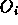
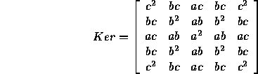
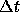
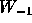
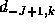
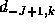
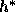

Knowledge is of two kinds. We know a subject ourselves or we know where we can find information upon it - Samuel Johnson
In this chapter we present some material and concepts that are used on and off in the rest of the thesis. In Section 1.1 we discuss modular integration, where we give details about strong and weak modular integration. In the following section (Section 1.2) a discussion on multiresolution is initiated and details regarding the construction of the two popular pyramids, Gaussian pyramid (Section 1.2.1) and wavelet pyramid (Section 1.2.2) are given. In Section 1.3 we review Markov random fields in brief and finally we talk about the Simulated annealing algorithm in Section 1.4 and give the pseudo code in Section 1.4.1.
along the y- axis) which perform one specific task,
such that the input after traversing through all these modules produces
the required output. This process of various modules getting together in
order to solve a given problem is termed as intra modular integration or
just modular integration. This concept is called
reductionism in the AI
literature and has been in use to solve large problems. For example, in
computer vision, the task of disparity estimation from a stereo pair of
images can be thought of as being the combined outcome of three smaller
modules, namely, (i) the feature extraction module, (ii) the matching
module and (iii) the interpolation module. In case of the high level
vision, the task of image interpretation can be thought of as the combined or
the net effect of the segmentation and the interpretation modules.
Modular integration can be classified into
two classes (i) weakly coupled
modular integration and (ii) strongly coupled modular
integration [1]. These two classes are differentiated by the
manner in which information, in the form of constraints on the solution,
are combined to obtain the solution of the vision task. In weakly coupled
modular integration, the data from one module is combined with the
functioning of the other modules in a way such that it does not affect
the operation of any other module. In strongly coupled modular
integration, the output of one module is allowed to interact with other
modules and affect their progress. Typically this control of a module A by
other modules is achieved by altering the constraints or the assumptions
of the given module A based on the outputs of other modules.
The weak and strong modular interaction is shown in Figure
1.1.
As seen in Figure 1.1, each module can be thought of as being made up of three nodes: the input, the constraint and the output node. We illustrate the difference between strong and weak integration by assuming two modules and as shown in Figure 1.1 and note that this discussion can be generalized to take care of any number of modules. Let  be the output, the input and the constraint of the module. represents the imposed constraint on the module j due to module i and represents the operation of module i. Then, the weak and the strong modular integration can be expressed as:
Modular integration can also be classified as feedforward and
feedback . In feedforward type of
modular integration, the data travels from one module to the next without
the data traversing back to the previous module. For example in case of
disparity estimation from stereo, modular integration would be
feedforward, when the data is passed from the feature extraction module to
the matching module and finally to the interpolation module in a
sequential manner. Here, there is no transfer of data from any
module to the previously traversed module. For example, there is no
transfer of data from either the interpolation module to the feature
extraction module or from the interpolation module to the matching module
(see Figure ).
In case of modular
integration
with feedback the data could move to and fro from one module to another.
For example, in case of disparity estimation using stereo if we allowed
the transfer of data from the matching module to the feature extraction
module or from interpolation module to the matching module, we would be
using modular integration with feedback.
In the generalized framework that we propose for solving computer vision
tasks (Chapter ) we
use strong modular integration with feedback.
Figure 1.1: Modular integration (a) weak integration and (b) strong
integration.
In brief, in modular integration, the various modules involved with a common objective, work synergistically, such that they help themselves by helping others perform better, with the final aim of improving the overall solution for which all these modules work together. This means that the modules which have the same objective work as a team rather than as an individual. The reason which motivates one to go in for modular integration is:
In this thesis, through examples we demonstrate how modular integration improves the final solution, specifically we show this for color image restoration, disparity estimation from stereo images and image interpretation. In the vision task of disparity estimation using stereo images, the feature extractor module, the matching module and the interpolation module work in an integrated manner to produce better disparity estimates. It is also shown that the optical flow estimates are better when the modules involved in estimating the optical flow , are integrated [5]. Modular integration has been used extensively in image processing and computer vision literature. Various paradigms have been used to integrate modules, for example Bozma and Duncan [6] use a game-theoretic approach to integrate vision modules, Clement and Thonnat [7] use a knowledge-based approach for integration, Gamble et al [8] use MRF for labeling of surface discontinuities. Alominonos and Shulman [9] propose a scheme for extension of Marr's paradigm to integrate vision modules and Poggio et al [10] integration of vision modules in parallel. Jepson and Richards [11] develop a lattice framework to integrate vision modules. Clark and Yullie have describe in great detail the various aspects of modular integration in [1].
The idea of looking at signals and analyzing them
at various scales has received enormous attention in
the field of computer vision. Multiresolution is a mode of efficiently and
effectively representing the data with an objective of reducing the
computational complexity. Multiresolution can be thought of as a data
structure which produces a successive condensed
representation of the information in a given image. The data at each
resolution is the output of a bandpass filter with
some center frequency (usually the center frequency of the filters are
octave apart).
The most obvious advantage of this type of representation is that they
provide a possibility for reducing the computational cost of various image
operations. The reduction in the computational cost is due to the fact
that when we operate in a multiresolution framework, we operate on a
data from the coarse to the fine resolution.
The result of going through such a procedure is that, at the finest
resolution we start off with a fairly good guess of the solution, the
guess having come from the immediate coarse resolution and hence we need
less time to reach the solution. One does indeed need to start with an
arbitrary guess at the coarsest resolution, but at that resolution the
amount of data one is operating on is many orders of magnitude less than
that at the finest resolution.
has received enormous attention in
the field of computer vision. Multiresolution is a mode of efficiently and
effectively representing the data with an objective of reducing the
computational complexity. Multiresolution can be thought of as a data
structure which produces a successive condensed
representation of the information in a given image. The data at each
resolution is the output of a bandpass filter with
some center frequency (usually the center frequency of the filters are
octave apart).
The most obvious advantage of this type of representation is that they
provide a possibility for reducing the computational cost of various image
operations. The reduction in the computational cost is due to the fact
that when we operate in a multiresolution framework, we operate on a
data from the coarse to the fine resolution.
The result of going through such a procedure is that, at the finest
resolution we start off with a fairly good guess of the solution, the
guess having come from the immediate coarse resolution and hence we need
less time to reach the solution. One does indeed need to start with an
arbitrary guess at the coarsest resolution, but at that resolution the
amount of data one is operating on is many orders of magnitude less than
that at the finest resolution.
In multiresolution representation, the problem of solving the vision task
 is reduced to the task of solving
is reduced to the task of solving  at each resolution. Figure
along the x-axis shows the multiresolution approach.
Let, represent the vision task at the finest resolution
at each resolution. Figure
along the x-axis shows the multiresolution approach.
Let, represent the vision task at the finest resolution  .
In the multiresolution approach the vision task
.
In the multiresolution approach the vision task  is not solved
directly, but is solved by solving the vision tasks ,
,
is not solved
directly, but is solved by solving the vision tasks ,
,  , at coarser resolutions and
appropriately
passing the variables of interest from coarser to finer resolution. The
motivation to use multiresolution in vision task comes from:
, at coarser resolutions and
appropriately
passing the variables of interest from coarser to finer resolution. The
motivation to use multiresolution in vision task comes from:
There exists two predominant ways of constructing multiscale
representations using
multiscale filtering: (i) Gaussian
and Laplacian pyramids
proposed by Burt and Adelson [13]
and (ii) the wavelet
pyramids [2]. Gaussian pyramids are defined by smoothening
brightness
values over larger areas producing a set of low pass filtered copy
of the original image and Laplacian pyramids are obtained by
differentiating smoothed brightness values producing a set of bandpass
filtered copy of the original image (see Figure
1.2).
The wavelet pyramids are constructed by low pass filtering and high pass
filtering the image along the rows and then along the columns to produce
four quadrants
(see Figure 1.5) such that the first quadrant is low
pass filtered along both the rows and columns of the image, the second quadrant is low
pass filtered along the rows and high pass filtered along the columns, the
third quadrant is high pass filtered along the rows and low pass filtered
along the columns and finally the fourth quadrant is high pass filtered
along both rows and columns. The filter coefficients are determined from a
set of four linear equations obtained as a consequence of the constraints
placed on the coefficients of the filter [14].
In this thesis we use both the Gaussian pyramid by Burt and Adelson
[13] and the wavelet pyramid
[2] for the construction of images at different resolutions. In
fact, in color image restoration (Chapter ) and disparity
estimation from stereo images (Chapter ) we use the
Gaussian pyramid and we use the wavelet pyramid for high-level vision task
of image interpretation (Chapter ). We could have used
either the Gaussian pyramid or the wavelet pyramid throughout the
thesis, but the idea was to demonstrate the fact that the developed
framework (Chapter )
would work irrespective of the scheme used for generating images at
different resolutions.
Nevertheless the wavelet representation of
the image is more compact in the sense, the lattice size does not
increase. The wavelet transform of an image of size is again an image of size  whereas the
Gaussian pyramid when constructed as suggested in [13] would
end up with a larger number of data points [2].
whereas the
Gaussian pyramid when constructed as suggested in [13] would
end up with a larger number of data points [2].

Figure 1.2: Procedure for obtaining the Gaussian
( ) and Laplacian (
) and Laplacian ( ) pyramid images from
) pyramid images from
 .
.
The basic approach of Burt and Adelson is depicted in Figure
1.2. Let,  be the gray level image at
resolution k and let represent the image at resolution
, which is obtained using the algorithm proposed in
[13]. An image
be the gray level image at
resolution k and let represent the image at resolution
, which is obtained using the algorithm proposed in
[13]. An image  at a given resolution is low pass
filtered so that the high spatial frequencies are removed, as a result we
can sample it at a lower rate (typically one half) and hence we have an
image of lower resolution and one half the size of the original image in
each dimension. This process of low pass filtering and subsampling results
in images, which are at different resolutions. In addition, the difference
images, at different resolutions are obtained by upsampling the
coarser image by a factor of 2, interpolating it, and then subtracting
it from the next finer resolution image.
at a given resolution is low pass
filtered so that the high spatial frequencies are removed, as a result we
can sample it at a lower rate (typically one half) and hence we have an
image of lower resolution and one half the size of the original image in
each dimension. This process of low pass filtering and subsampling results
in images, which are at different resolutions. In addition, the difference
images, at different resolutions are obtained by upsampling the
coarser image by a factor of 2, interpolating it, and then subtracting
it from the next finer resolution image.
A suitable kernel for low pass filtering is used to obtain images at
different resolutions. If we assume a 1-D signal and the size of the
kernel to be 5, then as shown by Burt and Adelson [13] the
weights of the kernel, denoted by , ,  , ,
, should satisfy the following constraints,
, ,
, should satisfy the following constraints,
 for
i = 0,1,2 (Symmetry ) and
for
i = 0,1,2 (Symmetry ) and

Figure: Gaussian pyramid () constructed using
the procedure depicted in Figure 1.2.
A kernel from [13]

with , and , can be used to convolve
with the high resolution image  ; the convolved image
is then downsampled (for example, selecting every alternate pixel along each
row and column) to obtain the image at lower resolution .
The process of obtaining the low resolution image and the difference image is
depicted in Figure 1.2, where the block
represents convolution with the kernel K and
represents
downsampling by 2 (namely, considering only every
alternate sample of
the signal or in other words discarding every alternate sample of the
signal), and
represents upsampling by 2 (namely, introducing a
zero between every sample of the signal). Figure 1.3
depicts the Gaussian pyramid (
; the convolved image
is then downsampled (for example, selecting every alternate pixel along each
row and column) to obtain the image at lower resolution .
The process of obtaining the low resolution image and the difference image is
depicted in Figure 1.2, where the block
represents convolution with the kernel K and
represents
downsampling by 2 (namely, considering only every
alternate sample of
the signal or in other words discarding every alternate sample of the
signal), and
represents upsampling by 2 (namely, introducing a
zero between every sample of the signal). Figure 1.3
depicts the Gaussian pyramid ( ) and Figure 1.4
depicts that Laplacian pyramid (
) and Figure 1.4
depicts that Laplacian pyramid ( ) constructed using the
procedure shown in Figure 1.2. The leftmost
image in Figure 1.3 is the image of size
) constructed using the
procedure shown in Figure 1.2. The leftmost
image in Figure 1.3 is the image of size  at the finest resolution .
at the finest resolution .

Figure: Laplacian pyramid constructed
using procedure depicted in Figure 1.2.
Multiresolution approach using wavelets is an efficient and effective way of representing data. According to Mallat, a primary advantage of the multiresolution approach using wavelets is its spatial orientation selectivity [2]. Another disadvantage of Gaussian pyramid [13], as pointed out in [2], is that the data at separate levels are correlated, whereas in the wavelet domain the data at each resolution is uncorrelated, this reflects in the form of increased data size in the gaussian pyramid compared to the wavelet pyramid.
Fourier transform is a tool widely used for many scientific purposes, but it is well suited only to the study of stationary signals where all frequencies have an infinite coherence time. The Fourier analysis brings only global information about the signal which is not sufficient, especially when we need to detect compact patterns. Gabor [15] introduced a local Fourier analysis, taking into account a sliding window, leading to a time-frequency analysis. This method is only applicable to situations where the coherence time is independent of the frequency. This is the case for instance for singing signals which have their coherence time determined by the geometry of the oral cavity. Morlet introduced the wavelet transform in order to have a coherence time proportional to the period [16].
Wavelets are functions, suited for the study of non-stationary continuous signals. They form the kernel of the wavelet transform, and enable mapping the signals from the time-domain into the time-frequency domain. The advantage of using wavelets is that at different times and at different frequencies, a different resolution can be obtained. The wavelet transform provides a unified framework in decomposing the signal into a set of basis functions by varying the resolution  and in a time frequency plane. The basis functions are called wavelets and are obtained from a single prototype wavelet called the mother wavelet . For any function to be a mother wavelet, it must satisfy the admissibility criterion [14]. The wavelet transform of a signal , denoted by , is
where, is the inner product,
is the wavelet and . Here, a is the dilation
parameter which determines the scale and b is the translation parameter.
The signal  can be reconstructed from its wavelet transform
can be reconstructed from its wavelet transform
 by an inverse transformation,
by an inverse transformation,
where, is a constant that satisfies the admissibility criterion:
The discrete wavelet transform (DWT) is defined as,
where , and and are constants such that , . In the rest of this section we assume (dyadic wavelet) and . The discretization on dyadic grid initiates the idea for multiresolution analysis. The wavelet transform can be viewed as constant Q filtering with a set of bandpass filters followed by subsample by a factor of two.
Assume to constitute an orthonormal basis in . Then,
The signal  at a fixed resolution m, can be obtained by
summing over all translations n,
at a fixed resolution m, can be obtained by
summing over all translations n,
Hence, at  resolution is obtained by linear
combination of the spanning set .
Let, define the space spanned by
resolution is obtained by linear
combination of the spanning set .
Let, define the space spanned by  . Hence, . It can be shown that the
signal
. Hence, . It can be shown that the
signal  at resolution is orthogonal to the signal
at the resolution. Therefore, we can write,
at resolution is orthogonal to the signal
at the resolution. Therefore, we can write,
where,  represents the direct sum. Now, let
represents the direct sum. Now, let  , the space
spanned by be defined as , then it can be shown that have the nested structure
, the space
spanned by be defined as , then it can be shown that have the nested structure
and .
Since contains the details (variation of the signal), a given resolution can be obtained by adding the details. This is the basis for the construction of multiresolution signals using the wavelet transform.
In practice, wavelet decomposition of the signal at various resolutions is
implemented using subband filtering [17]. The low pass,
subsampled approximation
of the signal  is obtained by passing the signal through a low pass
filter, , followed by downsampling by a factor of 2, the detailed
or the difference image is obtained by passing the signal through a
high pass filter,
is obtained by passing the signal through a low pass
filter, , followed by downsampling by a factor of 2, the detailed
or the difference image is obtained by passing the signal through a
high pass filter,  , and then downsampling by a factor of 2. In other
words, if
, and then downsampling by a factor of 2. In other
words, if  is an ideal halfband low pass filter, then an ideal
halfband high pass filter
is an ideal halfband low pass filter, then an ideal
halfband high pass filter  will lead to a perfect representation of
the original signal into two subsampled versions.
will lead to a perfect representation of
the original signal into two subsampled versions.
Suppose and the above mentioned ladder of spaces exist,
then we have , where , and
 are spanned by , and
respectively.
Then, we can represent  in terms of and
which are one level coarser
in terms of and
which are one level coarser
where,
Thus, the problem of multiresolution
decomposition in essence is to
compute ,  , , ,
which are the wavelet coefficients . One can
show that [2]
, , ,
which are the wavelet coefficients . One can
show that [2]
and
where, and  are the interscale basis coefficients and
can be looked upon as a low pass (L in Figure 1.5)
and high pass filter (H in Figure 1.5) respectively.
Hence, represents a signal at resolution
-J+1, namely, and similarly
represents . Hence (1.8) implies that the coarse
signal at resolution -J is obtained by low pass filter
( ) the finer resolution image or signal ().
) the finer resolution image or signal ().
The general idea behind wavelets as applied to image processing is simply to look at the wavelet coefficients as an alternative representation of the image. So, instead of performing operations on the pixels we work with the wavelet coefficients. This gives us an opportunity to take advantage of their multiresolution structure and their time-frequency localization. Wavelet pyramid is constructed, using a set of quadrature mirror filters L and H corresponding to the low pass and high pass filtering respectively. Initially the quadrature mirror filters act along the rows of the image and then again on the columns of the resulting image. This results in the original image being divided into four quads as shown in Figure 1.5.

Figure 1.5: Procedure for obtaining multiresolution images using the wavelet
transform; L is the low pass filter and H is the high pass filter, L
and H form a quadrature mirror pair.
Figure 1.6(a) shows a  image and
Figure 1.6(b) is the wavelet transform of
1.6(a) generated using the procedure depicted in
Figure 1.5 with Daubechies 4 tap filter [14].
image and
Figure 1.6(b) is the wavelet transform of
1.6(a) generated using the procedure depicted in
Figure 1.5 with Daubechies 4 tap filter [14].

Figure 1.6: (a) Image of size  (Pentagon) and (b) its
wavelet transform (using the Daubechies 4 tap filter).
(Pentagon) and (b) its
wavelet transform (using the Daubechies 4 tap filter).
It is important to know where it is beneficial to use multiresolution. It can be said that multiresolution can be used in all vision tasks, the motivation coming from the fact that HVS seems to use multiresolution always [18]. In fact, in the words of Tanimoto (foreword of [18]) the human retina acquires visual information at different degrees of spatial resolution at the same time -- high resolution in the fovea and low resolution in the periphery; not only does the density of the receptors vary in the visual field, but the varying ratio of the receptors to the bipolar and ganglion cells that carry their information forward in the visual pathway further stretches the range of resolutions of the data obtained by the eye. Data at different resolutions play different roles in vision. Information from periphery typically controls the focus of attention while fovea information provides the details needed for finer distinction and careful analysis. It is strongly believed that the human eye very much acts in a multiresolution framework, initially we tend to infer information by looking at the scene coarsely and then trying to pinpoint on the object that is of interest [12].
The multiresolution representation can be used with effect if it is known a priori that the properties of interest (i) vary smoothly with scale, and (ii) coincide spatially across all scales. This knowledge can improve significantly the computational savings by designing coarse to fine operations. For example the disparity of a stereo pair of images has the properties mentioned above and hence a coarse to fine strategy can be used to compute the disparity map. This procedure implies that first we apply operations to the coarse image and then use the results to focus attention or refine results in finer image, a philosophy advocated earlier by Marr and Poggio [19]. The problems that use this method do not try to combine the descriptions at different scales, except in the sense of constraining the computation at the previous finer scale.
In many vision tasks it is required that the image be modeled before we develop a scheme to solve the vision task. In this thesis we have assumed the image to be modeled by a Markov Random Field (a brief introduction to MRF is given in Section 1.3). The MRF configuration space for image and vision analysis is generally large and the search for an energy minimum is computationally intensive. Usually, iterative relaxation techniques are applied at the finest resolution to compute the solution. The new pixel value at each iteration depends on the previous value of the pixel and its neighbors. To decrease the number of iterations required to obtain global convergence, multigrid relaxation can be used to iterate at multiple scales [20]. For example, the coarse image is first iterated to derive an approximate solution, the obtained solution is quad tree interpolated to obtain an initial estimate at the next finer resolution. Using this estimate the fine image is iterated to obtain the final solution. We use this scheme (coarse fine strategy) in our color image restoration problem where the restored image at the coarse resolution is given as an initial estimate of the solution at the next finer resolution and the iteration being carried out at each resolution. A similar scheme is developed for disparity estimation from stereo image pair as well as joint segmentation and image interpretation.
Markov Random Field (MRF) theory is a branch of probability theory for analyzing the spatial or contextual dependencies of physical phenomena. MRF theory provides a convenient and consistent way of modeling context dependent entities such as image pixels and other spatially correlated features. This is achieved through characterizing mutual influences among such entities using MRF probabilities. The practical use of MRF models is largely ascribed to the equivalence between MRF and Gibbs distributions established by [21]. This enables us to model vision problems by a mathematically sound, yet tractable means for image analysis in the Bayesian framework [22]. From the computational perspective, the local property of MRFs leads to algorithms which can be implemented in a local and massively parallel manner. Furthermore, MRF theory provides a foundation for multiresolution computation [23].
For the above reasons, MRFs have been widely employed to solve vision problems at all levels. Most of the MRF models are for low-level processing (image restoration and segmentation , surface reconstruction , edge detection , texture analysis , optical flow , shape from X, active contours, deformable templates, data fusion , visual integration , and perceptual organization), but recently they are being used for high-level vision problems, for example image or scene interpretation [24,25].
Let S denote a regular lattice, such that the elements in S index the image pixels. We can define a neighborhood on S as,
where, is the set of sites neighboring i. The neighboring relationship has the following properties:
Let  denote the label set
and be a family of random variables defined on
the set S, in which each random variable
takes a
value . F is said to be a MRF on S with respect to a
neighborhood system N
denote the label set
and be a family of random variables defined on
the set S, in which each random variable
takes a
value . F is said to be a MRF on S with respect to a
neighborhood system N
if and only if the following two conditions are satisfied:
where is the set difference, denotes the set of labels at the sites in and
and
 stands for the set of labels at the
sites neighboring i. If F is a MRF with respect to such a neighborhood
system N, then from the Hammersely-Clifford theorem [21] (Markov - Gibbs equivalence relation) we
can write
stands for the set of labels at the
sites neighboring i. If F is a MRF with respect to such a neighborhood
system N, then from the Hammersely-Clifford theorem [21] (Markov - Gibbs equivalence relation) we
can write
where, f is a realization of F, Z is a normalization constant commonly referred to as the partition function and is given by
and is referred to as the Gibbs energy function .
Now  , also referred to as simply the energy function is defined by
, also referred to as simply the energy function is defined by
where, is the potential function defined over cliques C.
A clique is a subset such that every pair of
distinct
sites in C are neighbors. This definition is best understood by
considering some examples. For a first order neighborhood
corresponding to the site  the clique set is
the clique set is
Similarly, one can define the cliques corresponding to second order neighborhood. It can be noticed that the number of cliques quickly blows up by increasing the neighborhood order. Thus, in most applications one considers a first order or a second order neighborhood systems, because computational complexity is proportional to the number of cliques.
MRF theory tells us how to model the a priori probability of contextual
dependent patterns, such as a class of textures and an arrangement of
object features [23]. For the purpose of illustration, we cite
the example of the Ising model [26]. Here
F is a binary
image with  ; +1 representing an
up-spin and and -1
representing a down-spin. Moreover the Ising model assumes a first order
neighborhood, and the energy function in is given by
; +1 representing an
up-spin and and -1
representing a down-spin. Moreover the Ising model assumes a first order
neighborhood, and the energy function in is given by
Such models were studied in the context of ferro-magnetism.  depends on the property of the
material;
depends on the property of the
material;  represents the attractive case while the repulsive case. The parameter
represents the attractive case while the repulsive case. The parameter  represents the
effect of the external force field. A typical problem would be to find
that configuration of up and
down spins f which maximizes . We see that for
represents the
effect of the external force field. A typical problem would be to find
that configuration of up and
down spins f which maximizes . We see that for  this
will amount to aligning all
the spins in the same direction as the external force field. The most
general form for the energy function is given by [21]
this
will amount to aligning all
the spins in the same direction as the external force field. The most
general form for the energy function is given by [21]
The above
expansion could be viewed as the Reed-Muller expansion of  , where
f is a vector, each element of which can take p values (i.e. a p-ary
variable, as opposed to a binary variable).
, where
f is a vector, each element of which can take p values (i.e. a p-ary
variable, as opposed to a binary variable).
MRF theory is often used in conjunction with statistical decision and
estimation theories so as to formulate objective functions in terms of
established optimality principles. Maximum a posteriori (MAP)
probability
has been the most popular choice in MRF vision modeling . MRFs and the MAP
criterion together give rise to the MAP-MRF framework. This framework
enables us to develop algorithms for a variety of vision problems
systematically using rational principles rather than relying on adhoc
heuristics. In the MAP-MRF framework, the objective is the construction
of a joint posterior
probability of the MRF labels. Its form and parameters are determined, in
turn, according to the Bayes formula , by those of the
joint prior
distribution of the labels and the conditional probability of the observed
data, Appendix gives details of such a procedure
which also goes by the name, Bayesian reconstruction. Two major parts of the MAP-MRF modeling is to derive the form of the
posterior distribution and to determine the parameters in it, so as to
completely define the posterior probability (this is equivalent to the
construction of the energy function associated with the vision task).
In probabilistic methods based on MRF models of the image; solution is then cast as a maximum a posteriori (MAP) estimation problem [22]. This approach also involves solving an energy minimization problem; except that the MRF framework makes it relatively easy to incorporate terms in the energy function to account for image discontinuities [22].
In general, the constructed energy function associated with vision problems will be nonconvex , and could have several local minima, and in addition the global minima need not be unique. In fact, under the digitally quantized condition for images, one could view this as a problem in combinatorics. Typically, one uses a global minima seeking algorithm to minimize nonconvex energy functions. In this thesis, simulated annealing (SA) [27] algorithm is used for energy minimization.
The steepest decent type of algorithms are of no use when the energy
function to be minimized is nonconvex in nature because these minimization schemes end up settling in
a local minima. To circumvent this trap of falling into the local minima
we need to minimize the energy function using some global minima seeking
algorithm, like the genetic algorithm or the
simulated annealing algorithm. In this thesis, we use the simulated
annealing algorithm for the purpose of energy minimization .
Suppose, we use a gradient descent algorithm , but occasionally (with some probability) we allow it to go uphill. This means that for small dips in the function there is some chance that we will climb out of it. Suppose that we further allow random jumps from one position to another, not every time but with some probability. The probability of these uphill moves and random jumps will be controlled with a temperature parameter T that will diminish with time. As an analogy, consider dropping a marble into a tray with some smoothly varying bottom. If we use only gradient descent, the marble will roll into the closest minimum. Adding some random component to the movement is like shaking the tray while the marble is rolling. Most of the time the marble will roll downhill but every now and then it can bounce up and out of one valley and into another. Gradually, over time, we reduce the shaking until the ball settles comfortably into a minimum. Because of the shaking it is unlikely that this minimum is a shallow one, most likely that it will settle into the deepest (or near deepest) minimum possible.
If we use an inverse log cooling schedule and shake long enough, it has been proven that this will always find the global minimum. This process is called simulated annealing, because it simulates the annealing (gradual cooling) process used for metals. During the process of annealing, the free energy of the solid is minimized. Annealing is the physical process of heating up a solid until it melts, followed by cooling it down until it crystallizes into a state with perfect lattice. Practice shows that the cooling must be done carefully in order not to get trapped in locally optimal lattice structure with crystal imperfections. This is the reason why one used inverse log cooling schedule when using the simulated annealing algorithm.
In a physical process, the temperature is related to the molecular movement from one time increment to the next. In fact, a particular set of molecules are related to those in the previous trial in the sense that each molecule has moved somewhere in the neighborhood of movement from which new trial molecules are chosen is called temperature. The relation of temperature to this definition of molecular movement from one time increment to the next results in a simple physical picture: the degree of movement is analogous to the average kinetic energy of the system, which is related to the physical temperature. Analogously, in simulated annealing (as seen in the pseudo code in Section 1.4.1) the temperature is usually high (able to take long jumps) and gradually decreases (short jumps) as time progresses.
It can be observed that a solution procedure that aims for the global minima should have three capabilities, (i) it should be able to span whole of the solution space (it should be able to take large jumps in the solution space), (ii) it should also be able to take short steps (be able to converge to the global solution when it is in the neighborhood of the solution in the solution space) and (iii) should be able to jump out of local minima (some randomness to be incorporated). Simulated annealing algorithm and genetic algorithm are two well known global optimal solution seekers which possess these properties.
For the sake of completion, we give below the pseudo code of the simulated annealing algorithm. The algorithm is very familiar to people working in the area of computer vision literature and one can refer to Aarts and Korst [27] for more details.
procedure Simulated Annealingbegin¯ initialize:
, and L
rep¯ eat
for l=1 to L do
beg¯ in
Generate j
if then i=j
else
if
then i=j
end
k=k+1
until stop criteria
end
This document was generated using the LaTeX2HTML translator Version 95.1 (Fri Jan 20 1995) Copyright © 1993, 1994, Nikos Drakos, Computer Based Learning Unit, University of Leeds.
The command line arguments were:
latex2html -split 0 /home/malhar/nil/tex/LANIF/Chap.tex.
The translation was initiated by Sunil Kumar K. on Sun Dec 15 22:50:09 IST 1996
 and
and